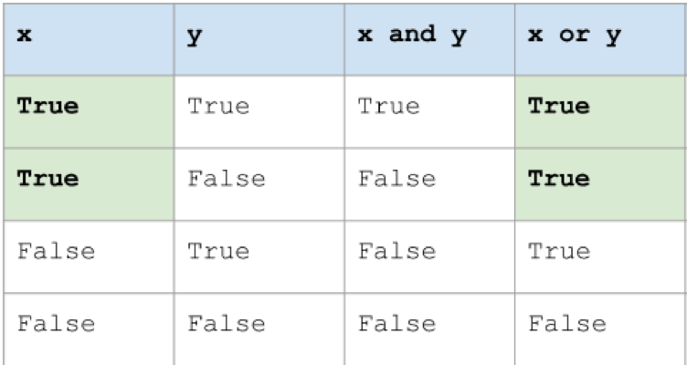
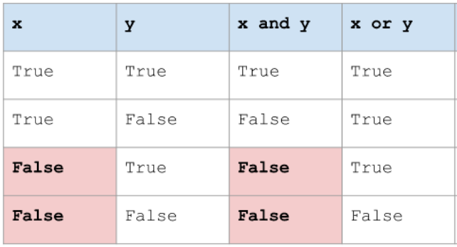

Control Flow
Boolean Expression
- True or False
- Did you bring lunch?
- broughtFood = True
If Statement
- Non-Sequential Programming
- Comparison Operator
- Logical Operator
if (score >= 70):
print (“Pass”)
else:
print (“Fail”)
Comparison Operator
- not equal
- greater than
- greater than or equal to
if (number < 1):
print (“Not between 1 and 10”)
elif (number > 10):
print (“Not between 1 and 10”)
else:
print (“Between 1 and 10”)
Logical Operator
- and
- or
- not
if (number < 1): print “Not between 1 and 10” elif (number > 10): print “Not between 1 and 10” else: print “Between 1 and 10”
EX1: raining.py
Write a program that has a Boolean variable that represents whether or not it is raining outside. Your program should print I'm going to eat lunch inside! if it is raining, and I'm going to eat lunch outside! if it is not raining.
EX2: AgeToVote.py
Ask the user for their age, and store it in a variable Use an if-else statement with the proper comparison operator to print You are old enough to vote! if the person’s age is at least 18, and You are not old enough to vote. otherwise An example run of your program might look like this:
Age: 19
You are old enough to vote!
… or like this:
Age: 16
You are not old enough to vote.
Ex3: Restaurant.py
Write a program that asks the user for their name using input. It should have another string variable that represents the name on a particular table reservation in a restaurant. The program should print Right this way! if the user’s name matches the name on the reservation, and Sorry, we don't have a reservation under that name. otherwise. An example run of your program might look like this:
Name: Shonda
Right this way!
… or like this:
Name: Mel
Sorry, we don't have a reservation under that name.
Short Circuit Evaluation
- True or (anything) => always True
- False or (anyting) => alwyas False
 
DE Morgans's Laws

Floating Point number
x = 0.0037 / 100
if ( x!= 0.000037):
print("It is not equal")
solution: round(0.0037/100, 6)
Function
``` def printHelloWorld(): print("Hell World!!")
printHelloWorld()